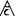

Build date: 14-October-2011
Abstract
This documentation presents the use of product derivation in association with a feature diagram editor. This product derivation tool and feature diagram editor takes part of the ANR Project Movida.
Table of Contents
Feature models are a way to add variability on models. By variability, we mean to model common and variable parts of a given architecture. An example of use of variability is given by Software Product Line (SPL) which consists in derive different family of products according to their similarities and differences. Another use is to model different software architecture possible choices. So, we have developped a tool that permit to create feature model (cf Feature Diagram Editor Documentation and sample wink video. ) and another tool that permit to use derivation on this Feature Diagram Editor. This document present quickly how to install and use the product derivation engine for feature diagram editor with a sample wink video. For more information about this editor please refer to the technical documentation.
![[Important]](gfx/admonitions/important.gif) | Product Derivation engine depends of Feature Diagram Editor |
|---|---|
This product derivation engine constitutes an extension of the Feature Diagram Editor. You must have installed the Feature Diagram Editor before install it. |
We can define variability on an architecture model thanks to the Feature Diagram Editor, associating Domain Model Elements of a given model to a given feature . The product derivation tool permits to create a product model (resolved model) from the architecture model at the beginning (base model) and the feature model. Firstly, we select all wanted features through a selection engine tool and store what features are selected or unselcted in a resolution model. Then we use this resolution model to obtain the resolved model through the product derivation tool.The next section will present the installation of the product derivation engine, a quickly presentation of use and a sample wink video.
You need to install first the Feature Diagram Editor and all its dependencies. For more informations about that please refer to the Feature Diagram Editor Documentation.
If the Movida studio update site is already added in the Install New Sofware go to Help->Install New Software. On the Work with field, search the Movida studio update site and check Product Derivation Engine.
Click on Next on all of the following wizard, accept the license ansd click on Finish. You also need to restart your Eclipse.
To install the Product Derivation Engine unzip the update site fr.inria.product_derivation_engine.OD6.updatesite.zip, open Eclipse and go to Help -> Install New Software. On the new wizard, click on Add name your new update site Selection and Derivation Engine and search the unzipped update site.
This chapter present a very quick of use of Product Derivation Engine. For more information please refer to the sample wink video and the sample wink video of the Feature Diagram Editor.
We want to derive the following base model which represents a car (this example is available in the Eclipse examples, go to File->New->Example-> Product Derivation Sample -> Product Derivation Test :

We have ever created a feature model for this base model through the Feature Diagram Editor tool :

We want to select a car with GPS, Radio, Electric Window and a diesel motor.
We suppose you have a feature model created with the feature diagram editor tool and the corresponding Obeo Designer session :

| Obeo Designer session must be open |
|---|---|
Be sure Obeo Designer session for the feature model is opened. So, double click on the session file (.aird) if it is not the case. |
To select features on the fearture model simply right click on the feature model (here fd.featurediagram) ->Movida-> Select features.
You obtain the following view in your Eclipse :
Open the new resolution model file (here fd2011_10_14_10_44_12.resolutionmodel) and check features you want to select :

Each icon corresponds to given operator that reference the feature :
: mandatory operator
 : optional operator
: optional operator : Card operator
 : Or operator
: Or operator : alternative operator
(Xor)
: alternative operator
(Xor)
Icons for unselected feature are grayed out.
This section shows you how to create a new resolution model to store selected or unselected features. The next section present how to derive this resolution model to obtain a resolved model (product model).
We have obtained a new resolution model in the last section. So, we use it with the Product Derivation Engine. To start with, we add it on the Obeo Designer session : right click on the Obeo Designer session (here fd.aird) -> Add Model. A new wizard appears, select Add Existing Resource -> Finish. Then click to Browse Workspace to search and select the resolution model.
Then right click on the resolution model file Movida -> Derive Product.
We obtain the following resolved model :

We have derived a car model with a diesel motor, a GPS, a radio and with electric windows.
This document made a quick tour of the Product Derivation functionalities for Feature Diagram Editor. For more details please refer to the wink video .